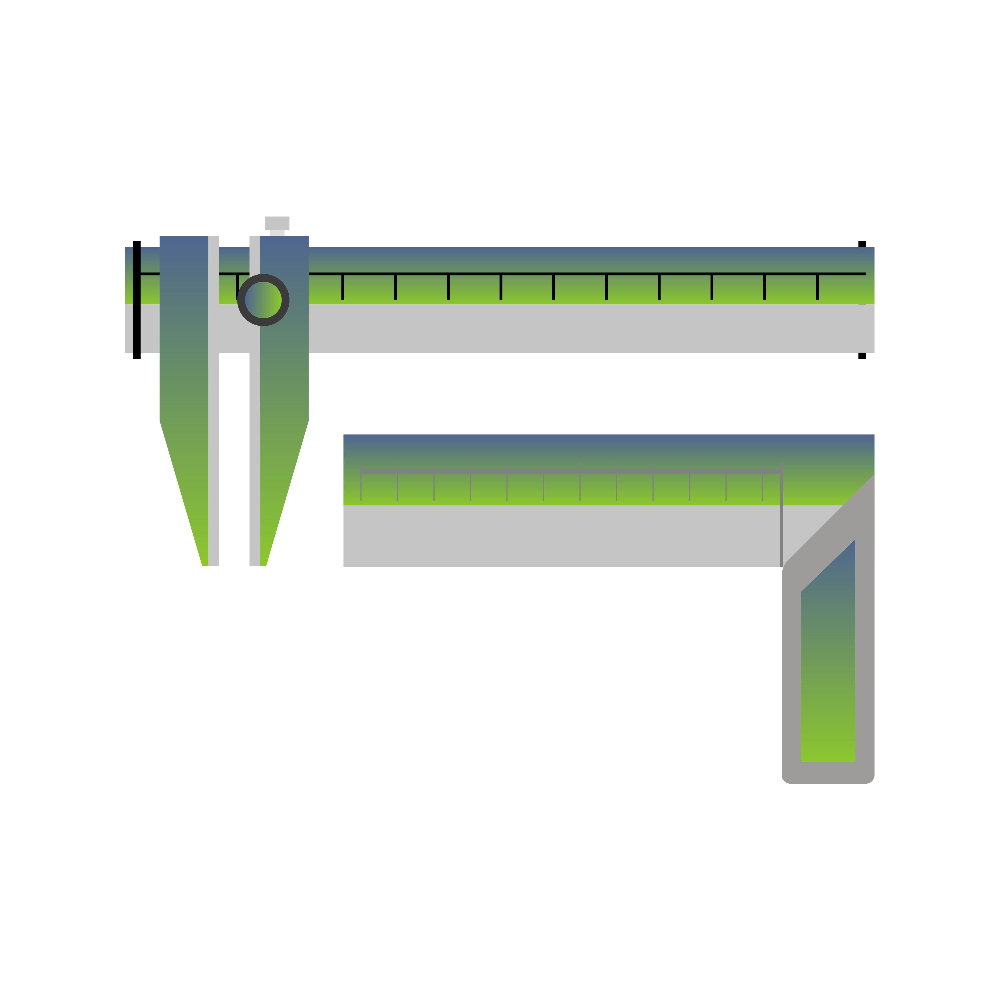

Physics
Study resistors in a series circuit

THEORY
Resistance: The property of a conductor which resists or opposes the flow of current through it is called the resistance of the conductor. Its SI unit is ohm(Ω). Current ∝ 1/Resistance The resistance of a uniform conductor is:
- Directly proportional to the length of the conductor and
- Inversely proportional to the area of the cross-section of the conductor. Therefore, R∝ l/A or R = ρ l/A
Series combination of resistors:
The arrangement in which various resistors are connected in such a way that they provide only one path to the flow of current is called the series combination of the resistors. The series combination of resistors Rv R2 and R3 is shown in the figure given below.
Expression of Equivalent Resistance in series combination of resistors:
The end-to-end connection of two or more resistors is said to be in series combination if they provide only one path to the flow of current, i.e. same current would flow through each resistor.The equivalent resistance of the series combination of two resistors is given by: Req = R1+ R2Characteristics Of Series Circuit:
- The current flowing through all the resistors in series circuit is same.
- The total voltage across the combination is equal to the sum of the voltage drop across the individual resistor.
- Voltage across any resistor is directly proportional to the resistance of that resistor (as I is constant).
- Equivalent resistance of the series circuit is equal to the sum of the individual resistances, i.e. Req = R1 + R2 + R3.
- The value of equivalent resistance is higher than the highest value of resistor used in the series circuit.
Uses of a series circuit:
It is used when- the resistance of the circuit is to be increased.
- the current in the circuit is to be decreased.
- the less potential difference across a particular resistor is needed.
Assembly Diagram
MATERIALS REQUIRED:
- Battery (voltage: 6.75 – 6.90)
- Voltmeter.
- Ammeter
- Connecting wires.
- Resistors.
- Keys.


Poha E-Labs | All rights reserved - 2022